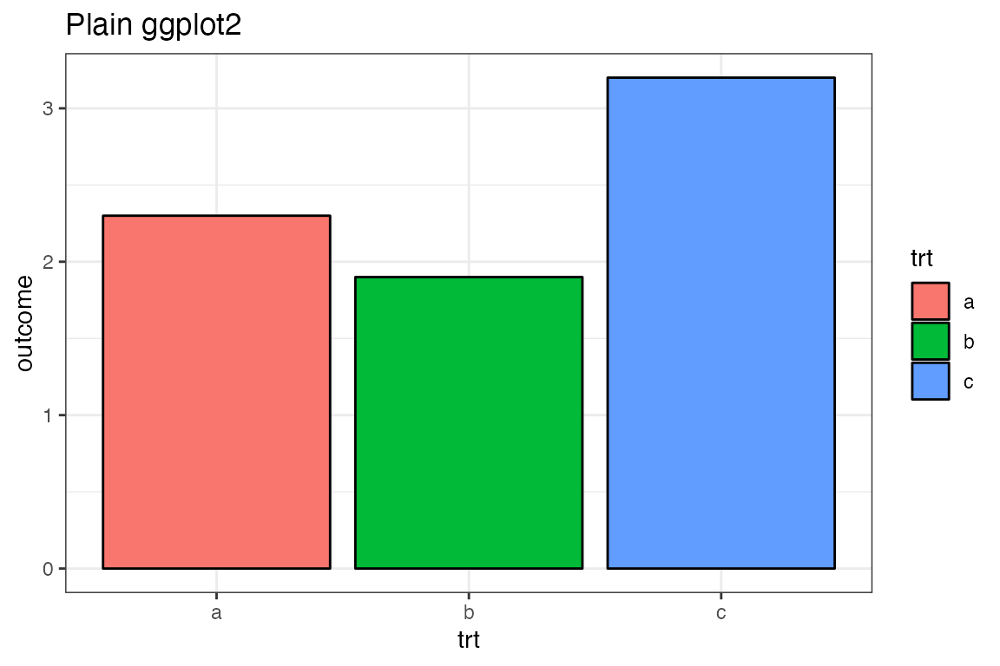
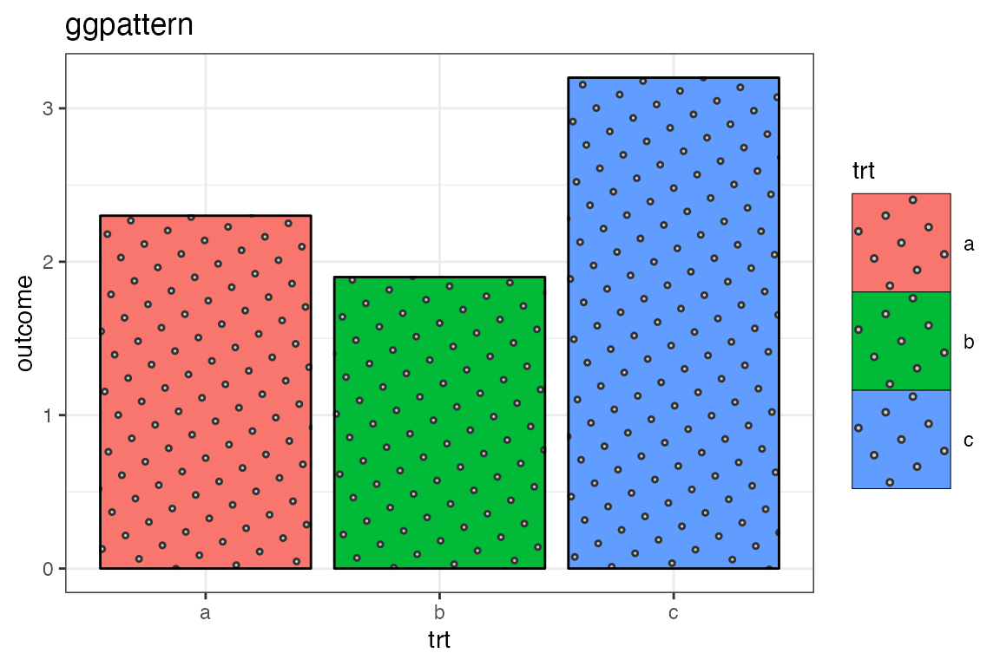
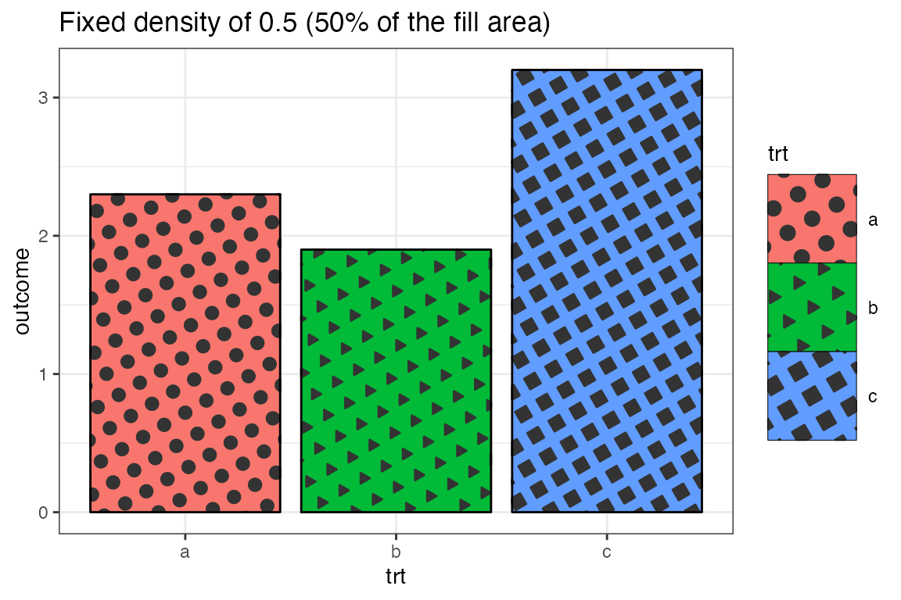
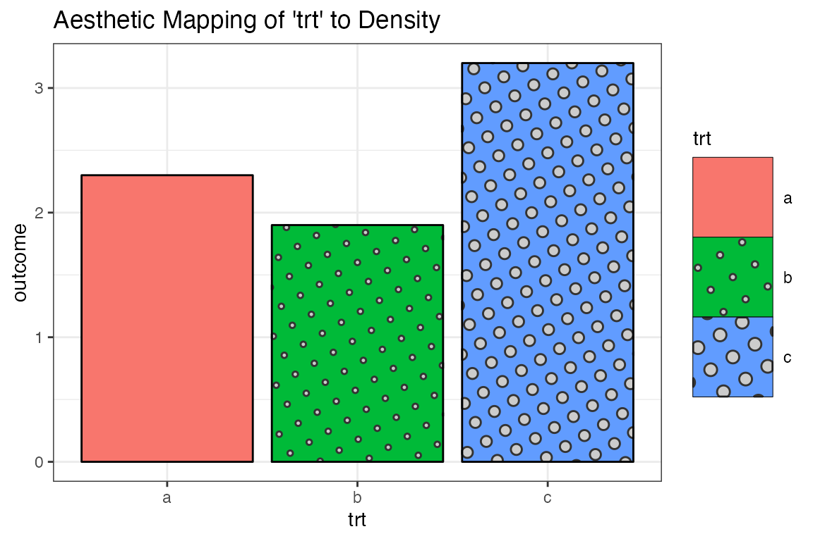
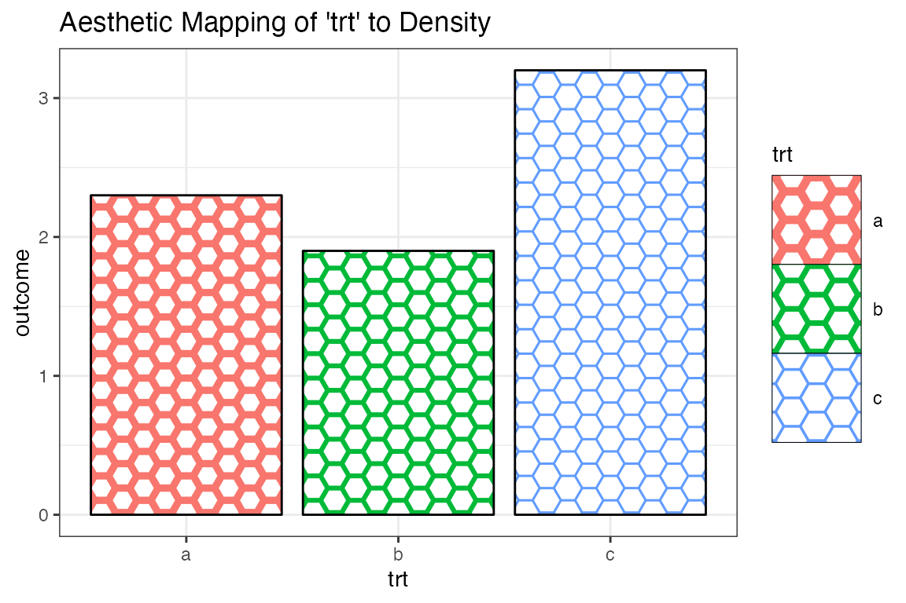
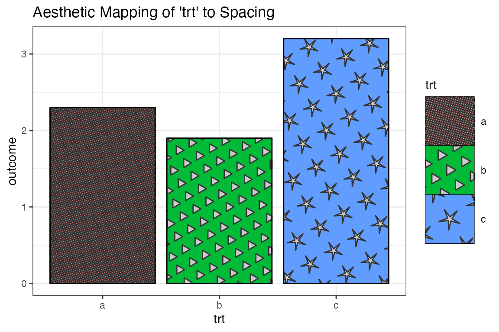
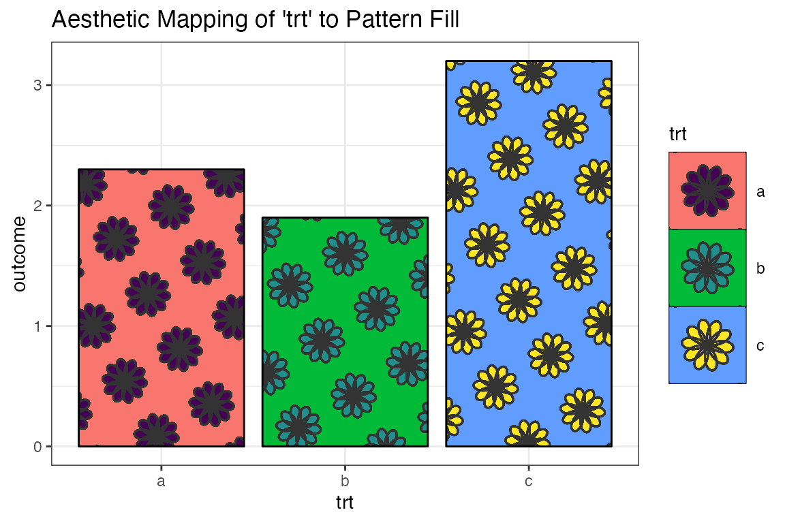

suppressPackageStartupMessages({
library(ggplot2)
library(ggpattern)
})Patterns ‘circle’, ‘pch’, ‘regular_polygon’, ‘rose’ - Parameters and Examples
Introduction to the ‘circle’, ‘pch’, ‘regular_polygon’, and ‘rose’ patterns
The ‘circle’ pattern draws circles
The ‘pch’ pattern draws “plotting character” symbols as in
graphics::points()The ‘regular_polygon’ pattern draws convex/star regular polygons
The ‘rose’ pattern draws rose curves
For more info on these patterns see their
{gridpattern}documentation:
Pattern Parameters
| aesthetic | description | default | possible values |
|---|---|---|---|
| pattern_colour | Stroke colour | ‘grey20’ | colour |
| pattern_fill | Fill colour | ‘grey80’ | colour |
| pattern_angle | Rotation angle | 30 | angle in degrees |
| pattern_density | Approx. fraction of area the pattern fills | 0.2 | value in range [0, 1] (fraction) |
| pattern_spacing | Spacing between repetitions of pattern | 0.05 | value in range [0, 1] (snpc units) |
| pattern_xoffset | Shift pattern along x axis | 0 | value in range [0, 1] (snpc units) |
| pattern_yoffset | Shift pattern along y axis | 0 | value in range [0, 1] (snpc units) |
| pattern_alpha | Alpha | NA | value in range [0, 1] or NA |
| pattern_linetype | Stroke linetype | 1 | linetype |
| pattern_size | Stroke linewidth | 1 | linewidth |
| pattern_type | Pattern type | NA | See circle, pch, regular_polygon, and rose pattern documentation |
| pattern_subtype | Pattern subtype | NA | See circle, pch, regular_polygon, and rose pattern documentation |
| pattern_grid | Grid type | ‘square’ | ‘square’, ‘hex’, or ‘hex_circle’ |
| pattern_rot | Pattern symbol rotation angle | 0 | angle in degrees |
| pattern_shape | Pattern shape | NA | See pch and regular_polygon |
| pattern_frequency | Frequency | 0.1 | Angular frequency in ‘rose’ pattern |
There are also a number of parameters for extra control of legend sizing and aspect ratio adjustments. See the ‘Pattern Parameters - Common’ for more information.
Data
Standard data for all the example plots
df <- data.frame(trt = c("a", "b", "c"), outcome = c(2.3, 1.9, 3.2))
df
#> trt outcome
#> 1 a 2.3
#> 2 b 1.9
#> 3 c 3.2Vanilla ggplot2
ggplot(df, aes(trt, outcome)) +
geom_col(aes(fill=trt),colour='black') +
theme_bw() +
labs(title = "Plain ggplot2")
Use the {ggpattern} geom
- Use
ggpattern::geom_col_pattern()instead ofggplot2::geom_col(). - Set
pattern = 'circle' - Default legends in
ggplot2are usually too small to show off an example of the pattern, so it will usually be necessary to increase the key size.
ggplot(df, aes(trt, outcome)) +
geom_col_pattern(aes(fill=trt),colour='black', pattern = 'circle') +
theme_bw() +
labs(title = "ggpattern") +
theme(legend.key.size = unit(1.5, 'cm'))
The Density Aesthetic (‘pch’ example)
The aesthetic pattern_density roughly corresponds to the fraction of the filled area which should be covered by the pattern.
In the following plot the density of striping is increased to 50% of the fill area.
ggplot(df, aes(trt, outcome)) +
geom_col_pattern(
aes(fill=trt, pattern_shape=trt),
colour = 'black',
pattern = 'pch',
pattern_density = 0.5
) +
theme_bw() +
labs(title = "Fixed density of 0.5 (50% of the fill area)") +
theme(legend.key.size = unit(1.5, 'cm'))
The Density Aesthetic as a Mapped Aesthetic
ggplot(df, aes(trt, outcome)) +
geom_col_pattern(
aes(fill = trt, pattern_density = trt),
colour = 'black',
pattern = 'circle'
) +
theme_bw() +
labs(title = "Aesthetic Mapping of 'trt' to Density") +
theme(legend.key.size = unit(1.5, 'cm'))
The Density Aesthetic as a Mapped Aesthetic with Manual Scale
scale_pattern_density_manual() can be used to manually control how the variable is mapped to the density.
ggplot(df, aes(trt, outcome)) +
geom_col_pattern(
aes(fill = trt, pattern_density = trt),
colour = 'black',
pattern = 'regular_polygon',
pattern_shape = 'convex6',
pattern_fill = 'white',
pattern_colour = NA,
pattern_grid = 'hex'
) +
theme_bw() +
labs(title = "Aesthetic Mapping of 'trt' to Density") +
theme(legend.key.size = unit(1.5, 'cm')) +
scale_pattern_density_manual(values = c(a = 0.7, b=0.8, c=0.9))
The Spacing Aesthetic as a Mapped Aesthetic
ggplot(df, aes(trt, outcome)) +
geom_col_pattern(
aes(fill = trt, pattern_spacing = trt, pattern_shape = trt),
pattern_density = 0.7,
colour = 'black',
pattern = 'regular_polygon',
pattern_scale = 0.2
) +
theme_bw() +
labs(title = "Aesthetic Mapping of 'trt' to Spacing") +
scale_pattern_shape_manual(values = c(a = "circle", b = "convex3", c = "star5")) +
theme(legend.key.size = unit(1.5, 'cm'))
The Fill Aesthetic as a Mapped Aesthetic (‘rose’ example)
ggplot(df, aes(trt, outcome)) +
geom_col_pattern(
aes(fill = trt, pattern_fill = trt),
colour = 'black',
pattern = 'rose',
pattern_frequency = 5/2,
pattern_density = 0.7,
pattern_spacing = 0.15
) +
theme_bw() +
labs(title = "Aesthetic Mapping of 'trt' to Pattern Fill") +
scale_pattern_fill_viridis_d() +
theme(legend.key.size = unit(1.5, 'cm'))